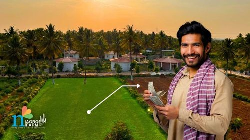

Loans For Agricultural Land Purchase in India: A Complete Guide
Key Takeaways:
For generations, farming has been the lifeblood of India's economy, with farmers playing a vital role in nourishing the nation. If you've ever dreamed of owning agricultural land but felt held back by financial constraints, there's hope on the horizon. Enter agricultural land purchase loans – a lifeline for aspiring farmers seeking to realize their agricultural dreams. In this blog, we'll break down everything you need to know about these loans for agricultural land purchase in simple, understandable terms.
Understanding Loans For Agricultural Land Purchase
Agricultural loans are tailor-made financial solutions designed to meet the specific needs of farmers and individuals involved in agricultural activities. These loans, offered by banks, financial institutions, and rural credit cooperatives, are like helping hands extended to farmers, assisting them in purchasing land, investing in equipment, and managing working capital.
Benefits of Loans to Buy Agricultural Land
In general, people are skeptical about loans, but loans to buy agricultural land have their benefits. Here are some of the benefits
Eligibility Criteria for Agricultural Land Purchase Loans
Documentation Required
Conclusion
Owning agricultural land is a significant milestone for any farmer, and agricultural land purchase loans make it possible for dreams to become a reality. With benefits like flexible repayment options, competitive interest rates, and government support, these loans pave the way for farmers to overcome financial barriers and embark on their farming journey. Before applying for a loan, it's essential to do your research, compare lenders, and understand the terms and conditions to make an informed decision.
FAQs
1. Can we get a loan against agricultural land?
Yes, you can get a loan against agricultural land as collateral. This means that you offer your land as security to the bank or lender in exchange for the loan. The amount of loan you can get depends on factors like how much your land is worth and your ability to repay the loan. These loans can be used for things like improving your farm, covering personal expenses, or investing in other ventures. Just make sure to check with the lender about what they need from you to apply for the loan.
2. Which bank is best for an agriculture land loan?
When it comes to getting a loan for buying agricultural land, the best bank for you depends on a few things. Some good options in India include State Bank of India, Punjab National Bank, Bank of Baroda, HDFC Bank, and ICICI Bank. These banks offer loans specifically designed for farmers, including ones to buy land. It's a good idea to compare things like interest rates, how you'll pay back the loan, and what other people say about the bank's service before deciding which one to go with.
3. Can banks give loans to buy agricultural land?
Yes, banks can give loans specifically for buying agricultural land. These loans are designed for farmers or anyone interested in investing in agricultural land. The loan amount, interest rates, and how you pay it back can vary depending on the bank's rules and your financial situation. People usually use these loans to expand their farms or buy land for farming. If you're thinking about getting one, it's a good idea to talk to different banks to see what they offer and if it fits your needs.